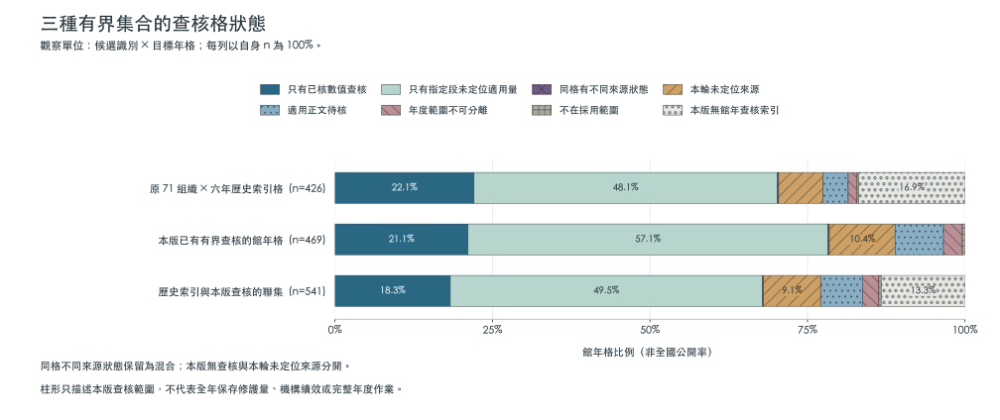
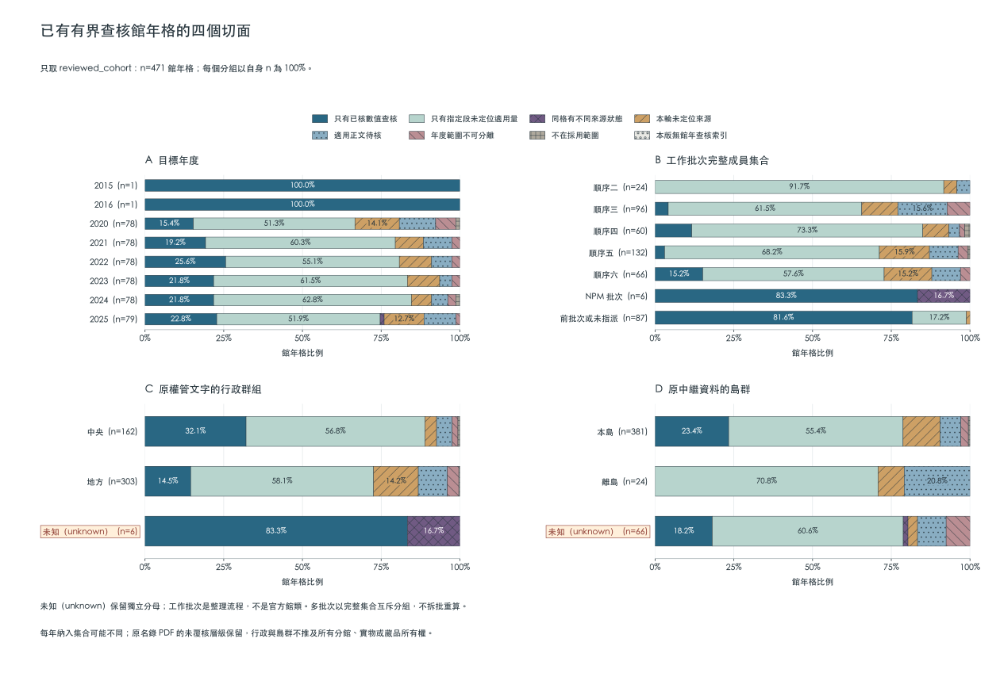
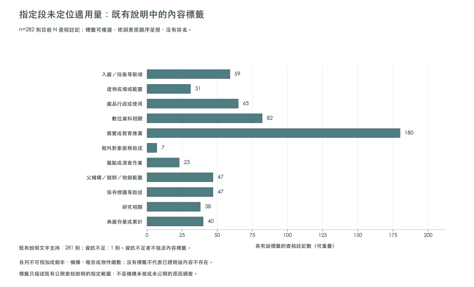

先確認分母
全集與年份子集分開閱讀
觀察單位是候選識別 × 目標年格。原歷史索引、本版已有有界查核的集合及兩者聯集互有重疊，另列2020–2025及期間外歷史子集；全集已包含子集，不能跨欄相加。聯集也不是全部候選的所有年份或全國母體。
- 原71組織×2020–2025歷史索引格：426個館年格，對應365則目前來源查核。
- 本版已有有界查核的館所候選×目標年：471個館年格，對應482則目前來源查核。
- 原歷史索引與本版有界查核的聯集：543個館年格，對應482則目前來源查核。
- 已查核集合中目標年為2020–2025的子集：469個館年格，對應480則目前來源查核。
- 已查核集合中目標年不在2020–2025的歷史子集：2個館年格，對應2則目前來源查核。

| 目前來源狀態 | 原71組織×2020–2025歷史索引格 426格 | 本版已有有界查核的館所候選×目標年 471格 | 原歷史索引與本版有界查核的聯集 543格 | 已查核集合中目標年為2020–2025的子集 469格 | 已查核集合中目標年不在2020–2025的歷史子集 2格 |
|---|---|---|---|---|---|
| 年度範圍不可分離 | 6 | 14 | 14 | 14 | 0 |
| 適用正文待核 | 17 | 36 | 36 | 36 | 0 |
| 同格有不同來源狀態 | 1 | 1 | 1 | 1 | 0 |
| 只有指定段未定位適用量查核 | 205 | 268 | 268 | 268 | 0 |
| 本版無館年查核索引 | 72 | 0 | 72 | 0 | 0 |
| 只有已核數值查核 | 94 | 101 | 101 | 99 | 2 |
| 不在採用範圍 | 1 | 2 | 2 | 2 | 0 |
| 本輪未定位來源 | 30 | 49 | 49 | 49 | 0 |
每種狀態表示什麼
- 年度範圍不可分離
- 來源的年度或館級範圍無法分離，不拆年、不分配父機構或他館的數量。
- 適用正文待核
- 來源或原件已定位，適用正文仍待核，不能當成已讀無量。
- 同格有不同來源狀態
- 同館同年不同來源有不同狀態，全部保留；有數值與另一來源指定段無量可以並存。
- 只有指定段未定位適用量查核
- 目前來源查核只有指定段未定位適用量；不是零修護，也不是全年未公開。
- 本版無館年查核索引
- 此格沒有本版有界查核，不改寫成未定位來源或已讀無量。
- 只有已核數值查核
- 目前來源查核只有已核數值狀態；仍僅限所列分項，不證明全館全年完整。
- 不在採用範圍
- 所列來源或年度不在本題採用範圍，不表示該館沒有保存工作。
- 本輪未定位來源
- 原輪次的有限查找未定位適用來源，不等於沒有來源、沒有作業或未公開。
表中的0格只表示該集合沒有這種狀態的格，沒有把未知數量填為0件。已有數值也只證明指定來源分項；同格的多個目前來源狀態全部保留，不用最高層級取代其他來源。
分組是整理工具
工作批次只表示NPM／順序二至六文件實列的流程成員，不是官方館類；未指派者保留 pre_batch_or_unassigned，不推定未曾研究。多批次以完整成員集合形成互斥組，不將同一格重算多次。
中央、地方與 unknown 只描述原權管／營運文字可辨識的機關群組，不代表主管、營運、所有權或法定登記相同。島群只描述原名錄或權管行政區，多場址、混合範圍與資料不足保留 unknown，不推定實物與所有分館位置。原名錄PDF未核的層級仍保留。

指定範圍的缺量內容註記
本版為275則目前「指定段未定位適用量」查核增加內容註記；274則有既有查核說明文字支持，1則資訊不足。註記的單位是查核則數，與館年格數不同。
引文來自整理者既有公開查核說明，不冒充官方原件逐字引文，也不表示本版重新讀取全部原件。註記連回 review_id、來源及原範圍，原查核狀態沒有因標籤改寫。
資訊不足維持資訊不足；這些標籤不能當成機構沒有做或未公開的原因。沒有指派某標籤，不等於確認該內容不存在。數位作業、盤點或館外服務也不是一律排除，仍須依每則原對象與作業範圍判讀。

| 內容標籤 | 查核註記數 |
|---|---|
| 入藏／採集等新增 | 57 |
| 建物或場域範圍 | 30 |
| 藏品行政或使用 | 60 |
| 數位資料相關 | 80 |
| 展覽或教育推廣 | 177 |
| 館外對象服務敘述 | 7 |
| 盤點或清查作業 | 21 |
| 父機構／館群／他館範圍 | 47 |
| 保存修護等敘述 | 43 |
| 研究相關 | 36 |
| 典藏存量或累計 | 36 |
搜尋別名保留原紀錄
本版提供307列對應既有 observation_id 的搜尋別名，只沿用已覆核的作業與完成分類。原詞、原量詞、數字、來源、紀錄角色及重疊關係保持原樣。
件、件數與件作品的 item_word 只是字面查找別名，不是件數換算、唯一物件定義或可加總證明。缺量詞不補件，複合單位不拆；跨年不拆成年份，混合作業不把同一數字複製到各類相加，未明載完成也不等於未完成。純數位修復不改歸實體修復。
衍生搜尋表不帶 quantity 欄位；原報量值請回到原報查詢，同讀完成狀態、對象範圍與官方來源定位。
關係與證據註記
86列原註記逐列保留，另作統一查找附表。總分項、同工作重述、平行量詞、重疊未核與單純頁面證據分開；分類不是重新核實官方關係，未列核實旗標仍保留未列。
原註記即使寫了包含、同批或不相加，也不因此補成已核實，更不授予加總、換算或不重複物件資格。原本未核實也不表示已證明沒有關係。
| 註記類型 | 列數 |
|---|---|
| 跨期階段或可能重疊不拆配 | 6 |
| 同年不同官方來源並存 | 21 |
| 檢視與表單關聯不推物件映射 | 1 |
| 不同標籤可能對應而未核實 | 1 |
| 不同指標作業或計數對象範圍 | 6 |
| 混合作業不拆配數量 | 1 |
| 批次或作業重疊尚未核明 | 19 |
| 原報平行量詞或多層計量 | 13 |
| 同段處置與完成範圍 | 1 |
| 原報總項與分項提醒 | 11 |
| 同來源作業重述只留原觀測 | 2 |
| 單一跨期紀錄不重複作年度量 | 1 |
| 來源證據續頁定位 | 1 |
| 來源構成僅作脈絡 | 1 |
| 對象分列不推方向或所有權 | 1 |
指定完成語原頁覆核
本版另核14筆原先依上下文判讀的紀錄。下表只說明指定業務子段的完成語修飾範圍；父計畫或年度總述的完成，不自動改成分項逐件明載完成。原數字、原完成詞及原分類保留。
文字層與實看原圖的頁段另存；掃描頁可只憑原圖核讀，不冒稱取得可用文字層。這不是全冊、全年所有作業、逐件完成清冊或人類二校。
| 館所／年與紀錄 | 本輪判讀 | 必要完成短語與適用界線 | 官方原件頁段 |
|---|---|---|---|
| 國立臺灣史前文化博物館／2024｜骨角器整飭 | 父句或總述的完成脈絡可支持 | 「已完成整飭之文物數量」；已完成整飭的總項明列內含骨角器整飭分項。完成語屬總項，不與總項再次相加，不推不重複物件或其他人骨作業全數完成。 原文內含分項的完成脈絡成立；未有逐件名冊或與其他分項去重。 | PDF11／印7 |
| 國立臺灣史前文化博物館／2024｜陶器及硬陶甕修復 | 父句或總述的完成脈絡可支持 | 「已完成整飭之文物數量」；已完成整飭的總項明列內含陶器及硬陶甕修復分項。保留父句完成與原作業範圍，不與總項再次相加。 完成語修飾內含此分項的總項；未核獨特物件與其他批次重疊。 | PDF11／印7 |
| 國立臺灣文學館／2024｜書畫文物修護 | 父句或總述的完成脈絡可支持 | 「完成「文學館家族書畫修護計畫」」；完成語修飾館外書畫修護計畫，分項用執行修護；不把鄰近另一計畫的整飭量或本館火損修護混入。 可支持父計畫完成脈絡，不能由此改成全部為本館自藏或跨館合計。 | PDF17／印11 |
| 國立臺灣文學館／2025｜修護文物（摘要原報） | 父句或總述的完成脈絡可支持 | 「已完成施政計畫重點概述」；前頁的已完成施政概述延續至本頁修護文物原報數。完成語屬年度概述，不將其他不同量詞分項的算術吻合當成已核父子關係。 原報摘要不是逐件完成清冊，也不消除其他分項或來源範圍的不確定。 | PDF9,10／印3–4 |
| 新北市立十三行博物館／2023｜燻蒸 | 父句或總述的完成脈絡可支持 | 「其餘各項已完成」；原報典藏庫房燻蒸次數位於父列完成語境；分項未再單獨使用完成詞，次不換成文物件數。父列明列第6項續辦，不能概稱該列所有項目完成。 本次未取得逐件完成清冊或處理物件數；典藏庫房作業標籤不等同逐件法律權屬或獨立物件去重證據。 | PDF6／印3 |
| 新北市立十三行博物館／2024｜燻蒸 | 父句或總述的完成脈絡可支持 | 「均已執行完畢」；原報典藏庫房燻蒸次數位於父列完成語境；分項未再單獨使用完成詞，次不換成文物件數。 本次未取得逐件完成清冊或處理物件數；典藏庫房作業標籤不等同逐件法律權屬或獨立物件去重證據。 | PDF6／印3 |
| 新北市立十三行博物館／2024｜借展品燻蒸 | 父句或總述的完成脈絡可支持 | 「均已執行完畢」；原報借展品燻蒸次數位於父列完成語境；分項未再單獨使用完成詞，次不換成文物件數。 借展品的借入／借出方向、逐件法律權屬及處理物件數未核；不由一次作業推全件完成。 | PDF6／印3 |
| 新北市立十三行博物館／2025｜燻蒸 | 父句或總述的完成脈絡可支持 | 「均已執行完畢」；原報典藏庫房燻蒸次數位於父列完成語境；分項未再單獨使用完成詞，次不換成文物件數。下方其他工作列的續辦例外不移用到本列。 本次未取得逐件完成清冊或處理物件數；典藏庫房作業標籤不等同逐件法律權屬或獨立物件去重證據。 | PDF7／印4 |
| 新北市立十三行博物館／2025｜借展品燻蒸 | 父句或總述的完成脈絡可支持 | 「均已執行完畢」；原報借展品燻蒸次數位於父列完成語境；分項未再單獨使用完成詞，次不換成文物件數。下方其他工作列的續辦例外不移用到本列。 借展品的借入／借出方向、逐件法律權屬及處理物件數未核；不由一次作業推全件完成。 | PDF7／印4 |
| 臺北市立美術館／2020｜油畫作品修復（第二期） | 父句或總述的完成脈絡可支持 | 「完成第二期」；原文將完成第二期與列名油畫修復批次放在同一專案敘述；完成只限該期，不延伸為同年全部油畫或其他專案完成。 原計畫年與報告資料年分開；此批與同年其他油畫量是否重複未逐件核對。 | PDF67／印67 |
| 臺南市美術館／2024｜館外委託修護作品 | 父句或總述的完成脈絡可支持 | 「完成館內外藏品與文物的維護修護工作」；館外委託修護分項由同段館內外完成總述支持語境，沒有直接修飾33組件的完成短語；與館內分項分列，不當本館自藏。 館外受託作品的對象、逐件法律權屬與去重未核；不由全年總述推定33組件的逐件完成清冊已驗。 | PDF19／印037（跨頁036–037右頁） |
| 臺南市美術館／2024｜館內修護 | 父句或總述的完成脈絡可支持 | 「完成館內外藏品與文物的維護修護工作」；館內修護分項由同段館內外完成總述支持語境，沒有直接修飾12件的完成短語；不併入同段文獻整飭或其他專案。 館內標籤未提供逐件法律權屬與去重證據；不由全年總述推定12件的逐件完成清冊已驗。 | PDF19／印037（跨頁036–037右頁） |
| 宜蘭美術館／2023｜裱片更改形式及保存盒製作；保存維護 | 父句或總述的完成脈絡可支持 | 「完成文化部補助」；完成語位於當年度典藏計畫父項，分項為改裱片形式及保存盒製作的保存維護混合作業；不改稱純修復。 保留父計畫完成層級；與穩定性維護批次重疊、獨特物件及跨年重複未核。 | PDF423／印401 |
| 宜蘭美術館／2023｜穩定性維護處理保存；保存維護 | 父句或總述的完成脈絡可支持 | 「完成文化部補助」；完成語位於當年度典藏計畫父項，分項為穩定性維護處理保存；維持原作業詞，不改稱修復。 保留父計畫完成層級；與改形式及保存盒批次是否重疊未核，不相加。 | PDF423／印401 |
資料與規則下載
各檔直接保存公開輸入的原始bytes。網站資料清單 manifest.json列出所有端點的SHA-256、bytes、來源路徑與本版版本；llms.txt提供機器入口。查核狀態、缺量註記與搜尋別名互不代替。
- 查核格狀態與年份子集 JSON （1066085 bytes）
- 缺量註記與引文 JSON （366972 bytes）
- 缺量註記 JSONL （294816 bytes）
- 缺量註記 CSV （242389 bytes）
- 搜尋別名 JSONL （204641 bytes）
- 搜尋別名 CSV （79606 bytes）
- 逐格查核狀態 JSONL （437096 bytes）
- 逐格查核狀態 CSV （205943 bytes）
- 分組分母與狀態 JSONL （342405 bytes）
- 分組分母與狀態 CSV （284432 bytes）
- 組織分組與原始證據 JSON （447276 bytes）
- 缺量內容與原因詞表 JSON （2165 bytes）
- 搜尋別名規則與覆核清冊 JSON （69050 bytes）
- 有界整理來源與圖表版本清單 JSON （2799 bytes）
- 關係與證據註記附表 JSON （155064 bytes）
- 關係與證據註記 JSONL （125983 bytes）
- 關係與證據註記 CSV （81408 bytes）
- 關係附表對照與原值清冊 JSON （10098 bytes）
- 關係附表版本與限制 JSON （1538 bytes）
- 指定完成語覆核 JSON （21432 bytes）
- 指定完成語覆核 JSONL （18936 bytes）
- 指定完成語覆核 CSV （11509 bytes）
- 完成語覆核範圍與清冊 JSON （1737 bytes）
- 完成語覆核版本與限制 JSON （764 bytes）
官方原件、整頁圖文、私人路徑與中間檔不在此重製；資料格式及網站程式的授權不改變官方來源權利。AI輔助整理與程式驗證不等於人類二校、專家或館方認證。